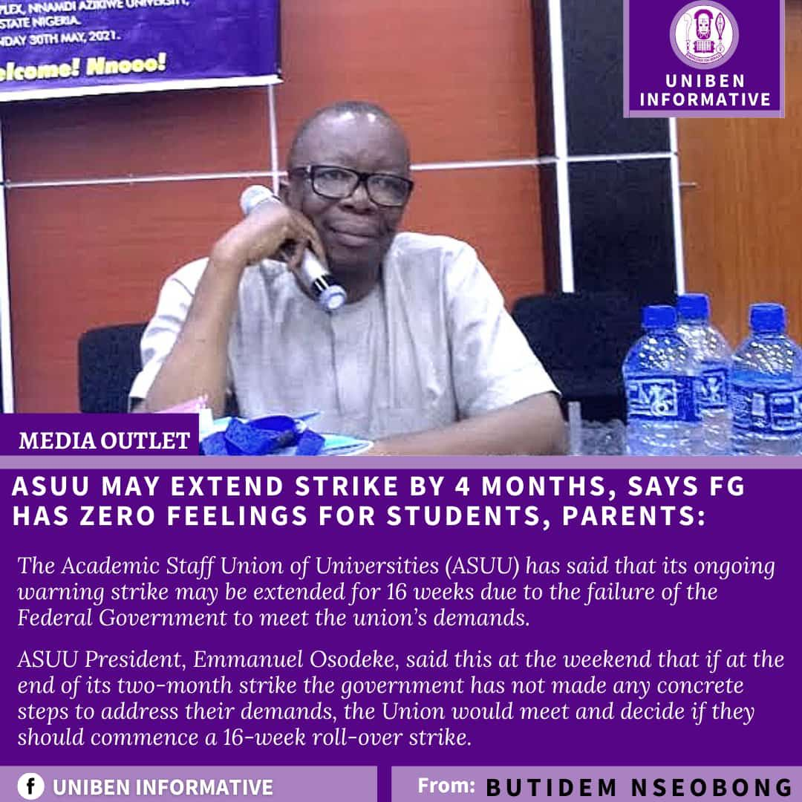

Hmm and for the strike issue, I'm actually trying not to let it get to my head, because the thought of it alone is draining me mentally, I resumed uniben on 12th january 2020, and from then till now we have been on exactly 12months strike, to start with on 12th February 2020, we went on 1month break because of sport festival, towards the end of that the federal government declared lock down, for some months, around March ending (still on lockdown) ASUU declared 9/10 months strike, and ended it in December and we had to restart the whole session (2019/2020) in 2021 January, and in between we went on sport festival break again since the last one they declared was unsuccessful, that lasted about 3weeks plus which some people might say 1month, then we came back to school and rounded up the session that year (2021), then we started this session in January, and on 14th february ASUU concluded on embarking on an "indefinite and comprehensive, suffocating strike" over 2009 failed agreement, this started with one month warning ⚠️ strike then they extended it by 8 weeks (2months) here we are now in April 9th with no good news but rather ASUU said they would extend the strike by 4months if their demands aren't met hmmm, then a federal Government representative said on the news that there is no money to settle ASUU. So in total right now we have spent over 16months without lectures this includes the breaks.
This is the video of the last meeting ASUU had before the present strike on 13TH february 2022.
This is the News report were Fedral Government Said they can't meet ASUU's demands. This was after Buhari gifted $1million to Afganistan.
This is the News report of ASUU might extend the strike.
And another issue, Aunty Beauty was telling me Aunty Angela said something concerning private University, but the issue is that this my current set (2020/2021) in private Universities are actually going to 300level in August, this is how bad the strike has affected UNIBEN calender, and the same 2020/2021 set in UNIBEN is the current hundred level, so that idea of private univeristy would actually lead to me going back to their hundred level, which would likely be the incomimg set because in UNIBEN we were just starting second Semester when they went on strike.